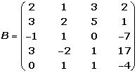
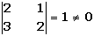
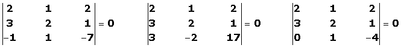

Rango de una matriz. Cálculo por determinantes
Rango de una matriz
El rango de una matriz Es el número de filas (o columnas) linealmente independientes. Utilizando esta definición se puede calcular usando el método de Gauss.
También podemos decir que el rango es: el orden de la mayor submatriz cuadrada no nula. Utilizando esta definición se puede calcular el rango usando determinantes.
Cálculo del rango de una matriz por determinantes

1 Podemos descartar una fila (o columna) si:
Todos sus coeficientes son ceros.
Hay dos filas (o columnas) iguales.
Una fila (o columna) es proporcional a otra.
Una fila (o columna) es combinación lineal de otras.
Suprimimos la tercera columna porque es combinación lineal de las dos primeras: c3 = c1 + c2.

2 Comprobamos si tiene rango mayor o igual que 1, para ello se tiene que cumplir que al menos un elemento de la matriz no sea cero y por tanto su determinante no será nulo.
|2|=2≠0
3 Tendrá rango mayor o igual que 2 si existe alguna submatriz cuadrada de orden 2, tal que su determinante no sea nulo.

4 Tendrá rango mayor o igual que 3 si existe alguna submatriz cuadrada de orden 3, tal que su determinante no sea nulo.

Como todos los determinantes de las submatrices son nulos tiene rango menor que 3, por tanto r(B) = 2.
En general, los pasos a seguir para el cálculo del rango por determinates son:
El rango es el orden de la mayor submatriz cuadrada no nula.
1 Descartamos las filas (o columnas) que cumplan las condiciones vistas anteriormente.
2 Si al menos un elemento de la matriz no es cero su determinante no será nulo y, por tanto, el rango será mayor o igual a 1.
3 El rango será mayor o igual a 2 si existe alguna submatriz cuadrada de orden 2, tal que su determinante no sea nulo.
4 El rango será mayor o igual a 3 si existe alguna submatriz cuadrada de orden 3, tal que su determinante no sea nulo.
5 El rango será mayor o igual a 4 si existe alguna submatriz cuadrada de orden 4, tal que su determinante no sea nulo.
De este mismo modo se trabaja para comprobar si tiene rango superior a 4, hasta que la submatriz (o las submatrices) del mayor orden posible tenga (o tengan) determinante nulo.